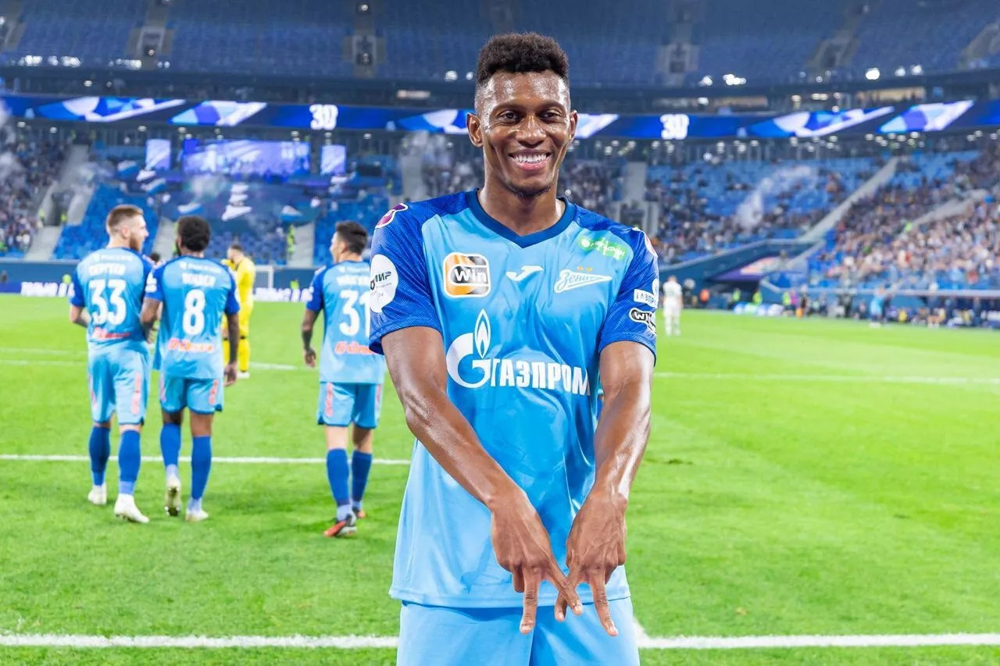

19:07 08.02.2024
В "Шанхае" - без раскачки: клуб Слуцкого разгромно проиграл "Зениту"
"Зенит" разгромно победил клуб Слуцкого на турнире в Катаре
Товарищеский матч действующего чемпиона России против одного из - но не самого сильного - футбольного клуба Китая мог остаться незамеченным. Но в начале 2024 года карты легли так, что встреча на сборах в Катаре стала интересна зрителям.
Это стало возможно на организованном петербургским "Зенитом" турнире "Кубок равноправия", участниками которого стали бразильский "Сантос", катарский "Аль-Духаиль" и китайский "Шанхай Шеньхуа". Встреча российского и китайского клубов заиграла новыми красками благодаря приходу на пост главного тренера "Шанхая" экс-наставника сборной России Леонида Слуцкого. В середине нулевых он успел потренировать нынешнего главного тренера "Зенита" Сергея Семака в футбольном клубе "Москва". После этого последний входил в штаб Слуцкого в сборной России. Учитель и ученик еще до стартового свистка тепло поприветствовали друг друга и перекинулись несколькими фразами.
С какими именно проблемами столкнулся российский форвард, не сообщается. Сама программа была запущена НХЛ в 1996 году, ее цель заключается в помощи игрокам справиться с проблемами психического здоровья или зависимостью (алкогольной или наркотической). Период прохождения этой программы является неограниченным: хоккеисты возвращаются в расположение своих команд, когда считают, что полностью восстановились и прошли лечение. Важным элементом этой программы остается конфиденциальность — информация о здоровье игроков остается строго приватной. Правда, это не защищает их от распространения слухов в СМИ.
Еще одним связующим с успешным прошлым "Зенита" звеном стал нападающий Сердар Азмун. Форвард, чья команда не смогла выйти в финал проходящего в эти дни в Катаре Кубка Азии, приехал на игру и удостоился радушного приема. Для Слуцкого, а также входящих в его штаб Василия Березуцкого и Олега Яровинского человеком - напоминанием о былых победах оказался экс-защитник ЦСКА Марио Фернандес, который прошлым летом перебрался в "Зенит". И тут не обошлось без объятий, улыбок и дружеских похлопываний по плечу.
Гораздо активнее были помощники Слуцкого - Березуцкий и Яровинский. Они пытались докричаться до игроков с трибун не очень масштабного по последним катарским меркам стадиона и обменивались мнениями с главным. В январе Леонид Викторович заявлял, что проведение товарищеских матчей против сильных соперников вне зависимости от результата будет полезным для его команды. В матче с "Зенитом" все сложилось именно так — удручающие 0:6 и внушительная чаша пищи для размышлений.
Главные новости
-
Друг Овечкина временно покинул "Вашингтон". Новая эпидемия в НХЛ?
11.38
-
Бетербиев и Бивол подерутся летом! Отвечаем на пять главных вопросов по бою
12.53
-
Последний шанс. Хэмилтон идет в "Феррари" за рекордным титулом
12.53
-
В "Шанхае" - без раскачки: клуб Слуцкого разгромно проиграл "Зениту"
12.53
-
Самсонова вышла в полуфинал турнира в Абу-Даби
14.13
-
Лебедев назвал формальностью нейтральный статус россиян на Олимпиаде
10.05